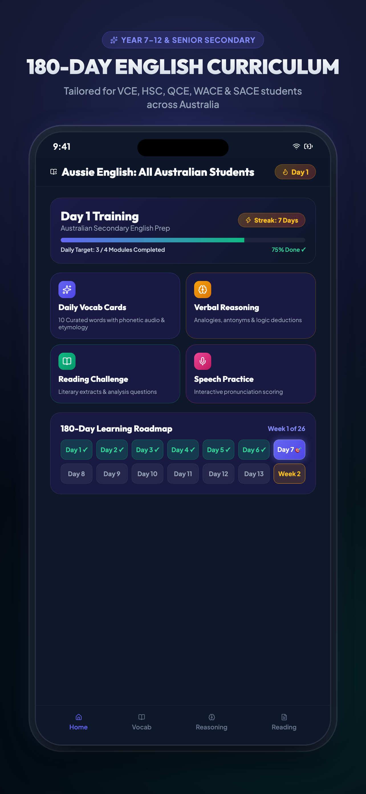

Aussie English: All Australian Students
The ultimate 365-day senior English prep companion engineered specifically for Australian secondary students across VCE, HSC, QCE, SACE, and WACE. Built with an offline-first SQLite curriculum engine, daily vocabulary mastery, analytical reasoning drills, and on-device privacy-first AI sentence evaluation.

365-Day Curriculum & Streak Roadmap
Progressive daily pacing with locked forward advancement, streak counters, and flexible backward review across the entire academic year.
Structured daily tasks (Vocab + Reasoning + Reading). Requires 100% daily mastery to unlock the next day, preventing superficial skipping while enabling backward review.
Curated high-yield metalanguage words with Zipf frequency ratings, VCE analytical sentence examples, native Text-To-Speech pronunciation, and 10-word retention quizzes.
Targeted exercises training rhetorical analysis, analogical reasoning, inference deconstruction, and logical deduction with instant concise rationales (<35 words).
Curriculum-aligned passages covering Reading Texts, Crafting Texts, and Exploring Argument (including licensed articles from The Conversation).
Immediate feedback transforming conversational or first-person assertions into formal third-person academic prose, flagging part-of-speech misuses, and scoring analytical depth.
Comprehensive milestone tests every 7 days applying SM-2 spaced repetition principles to consolidate weekly learnings and identify weak topics.